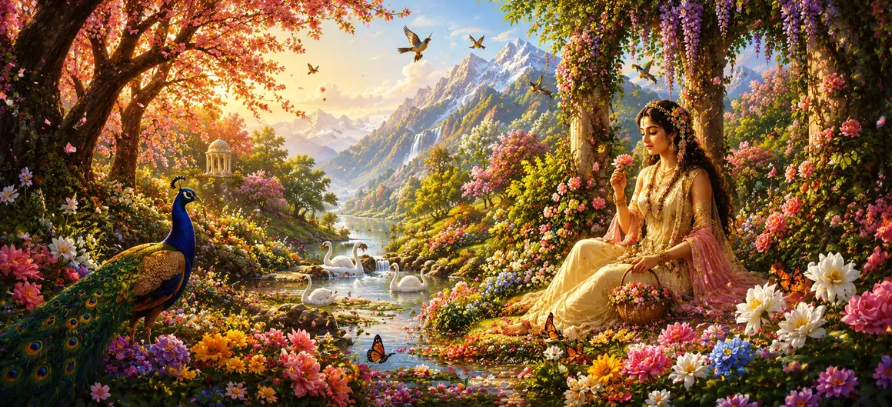

As the sacred events of Sati Khanda continued to unfold, the arrival of Vasanta, the season of spring, brought a remarkable transformation to the world. Nature awakened from its stillness, flowers blossomed in abundance, gentle breezes carried sweet fragrances, and the entire creation seemed filled with renewed life and joy. The coming of spring was not merely a seasonal change but a divine event that prepared the stage for important cosmic developments.
In Hindu tradition, Vasanta is celebrated as the king of seasons, symbolizing beauty, fertility, harmony, and renewal. The gods themselves delight in its arrival, for it awakens love, inspiration, and creative energy throughout the universe. As this auspicious season spread its influence across the worlds, it became an essential part of the divine plan that would soon involve Kāma, the gods, and Lord Shiva Himself.
With the arrival of Vasanta, forests, gardens, mountains, and riverbanks were transformed into scenes of extraordinary beauty. Trees burst into bloom, colorful flowers covered the earth, and sweet fragrances drifted through the air. Birds sang melodious songs while bees hummed among the blossoms, creating an atmosphere of harmony and delight throughout creation.
The cool breezes of spring carried a soothing energy that touched all living beings. Hearts became lighter, minds grew cheerful, and the world seemed filled with hope and vitality. Even the sages recognized the unique influence of Vasanta, for it encouraged creativity, devotion, and appreciation of the Divine beauty present in nature.
Vasanta is often described as the beloved companion of Kāma, the god of love. Wherever spring appears, love and attraction naturally flourish. The blossoming flowers, fragrant breezes, and enchanting beauty of nature become instruments through which Kāma exerts his influence. Thus, the arrival of spring signaled the approach of events closely connected with Kāma’s divine mission.
Although the beauty of spring delighted all beings, its arrival carried a deeper purpose. Unknown to most of creation, the gods were preparing for a crucial undertaking that would influence the future of the universe. The season of Vasanta would soon play an important role in setting these divine events into motion.
Spring represents the awakening of life and the beginning of new possibilities.
As the companion of Kāma, Vasanta encourages affection, harmony, and beauty.
The season prepares the world for important events in the cosmic plan.
The beauty of Vasanta was not limited to the earthly world. The celestial realms also rejoiced in its arrival. Divine gardens blossomed with rare flowers, heavenly fragrances filled the air, and the gods witnessed nature unfolding in perfect harmony. Everywhere there was celebration, beauty, and renewed energy.
As spring spread its influence, the gods began to recognize that the moment they had been waiting for was drawing near. The favorable atmosphere created by Vasanta seemed perfectly suited for accomplishing a divine purpose. Their thoughts gradually turned toward Lord Shiva and the great mission that still remained unfinished.
Though spring appeared to be merely a season of beauty and joy, it was also serving a higher cosmic purpose. The blossoming of nature symbolized the awakening of forces that would soon influence the destiny of gods, sages, and the entire universe. The season itself had become an instrument of divine will.
The arrival of Vasanta marked the beginning of a chain of events that would soon unfold in remarkable ways. Nature had completed its preparation, the gods were attentive, and the stage was set for the next chapter of the divine drama. What appeared to be a simple change of season would soon lead to consequences of immense significance.
In the Shiva Purana, Vasanta is more than a season of flowers and beauty. It symbolizes awakening, transformation, hope, and the preparation of the soul for divine purpose. Just as nature blossoms after a period of stillness, spiritual growth emerges after patience, discipline, and devotion.
The arrival of Vasanta revealed the perfect harmony woven into creation. Every flower, breeze, bird, and tree appeared to participate in a grand celebration orchestrated by the Divine. This harmony reminded sages that all aspects of nature ultimately move according to a higher cosmic order.
While the world rejoiced in the beauty of spring, few understood the profound events that were about to unfold. The gods knew that a crucial moment was approaching, yet ordinary beings simply enjoyed the blessings of the season. In this way, destiny quietly advanced while creation remained unaware of what lay ahead.
Spring softened hearts and awakened emotions. Feelings of affection, beauty, and inspiration became stronger among both humans and celestial beings. This subtle influence was part of the Divine design, for it would soon play a vital role in the unfolding events involving Kāma and Lord Shiva.
With Vasanta now fully established across the worlds, the preparations were complete. Nature, the gods, and the cosmic forces were all moving toward a single purpose. The next chapter would reveal how Kāma, encouraged by the season of spring, undertook a mission that would profoundly influence the destiny of the universe.
"Just as spring awakens the sleeping earth, divine grace awakens the sleeping soul. Nature blooms outwardly, but the true purpose of life is the blossoming of the heart in devotion and wisdom."
The arrival of Vasanta has prepared the worlds for an important turning point in the divine narrative. As nature blossoms and hearts awaken, the story now moves toward Kāma himself and the extraordinary influence he possesses over gods, humans, and all living beings.